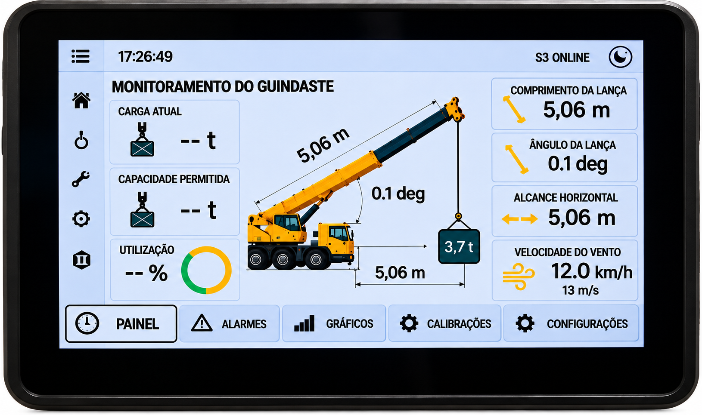

PAINEL PRINCIPAL
Visualização integrada das principais informações monitoradas.
MONITORAMENTO DE GUINDASTES
Sistema de monitoramento desenvolvido para reunir, em uma única interface, informações essenciais da operação do guindaste, permitindo acompanhamento claro e em tempo real.
FALE COM A SCHIECCHI
SISTEMA COMPLETO · 10,1″
As principais informações da operação reunidas em uma interface desenvolvida para facilitar a visualização, o acompanhamento e a tomada de decisão durante o trabalho.
RECURSOS DO SISTEMA
Visualização integrada das principais informações monitoradas.
Consulta às tabelas configuradas para o equipamento.
Acompanhamento visual dos parâmetros monitorados.
Visualização de alertas e condições configuradas de operação.
Acesso às funções técnicas autorizadas.
Recursos de calibração disponíveis conforme a configuração instalada.
As funções disponíveis podem variar conforme o modelo do equipamento, sensores instalados e configuração do sistema.
APLICAÇÃO
Aplicações em guindastes móveis e guindastes tipo grua, conforme os parâmetros e recursos definidos para cada instalação.
SOLUÇÕES COMPLEMENTARES
ANEMÔMETRO + FINS DE CURSO
Solução compacta para acompanhamento da velocidade do vento e dos limites de subida do gancho ou moitão.
MONITORAMENTO DE VENTO
Uma solução objetiva para operações que necessitam acompanhar a velocidade do vento em tempo real, sem os recursos adicionais do AXIS WIND ou do sistema completo de monitoramento.
CONSULTAR A SCHIECCHIMONITORAMENTO DE GUINDASTES
Conte à SCHIECCHI sobre o equipamento e as informações que você precisa acompanhar.